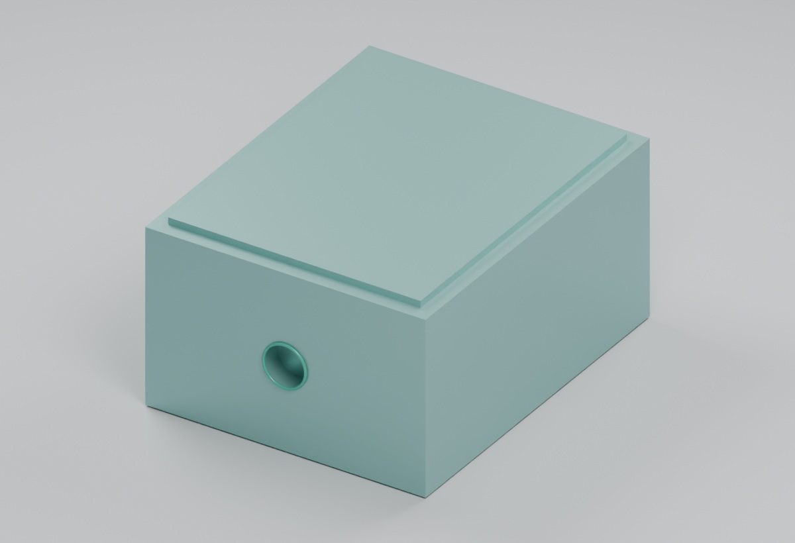

Evidence Replay
Compare archived requirement measurements beside studio renders of each CAD revision.

Global IoU
Extra material
Material in required void
Trajectory model
Archived record
SHA-256 verification
SHA-256:
Archived measurements from recorded CAD checks; replay does not re-execute the FreeCAD evaluator.